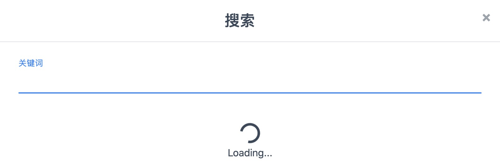
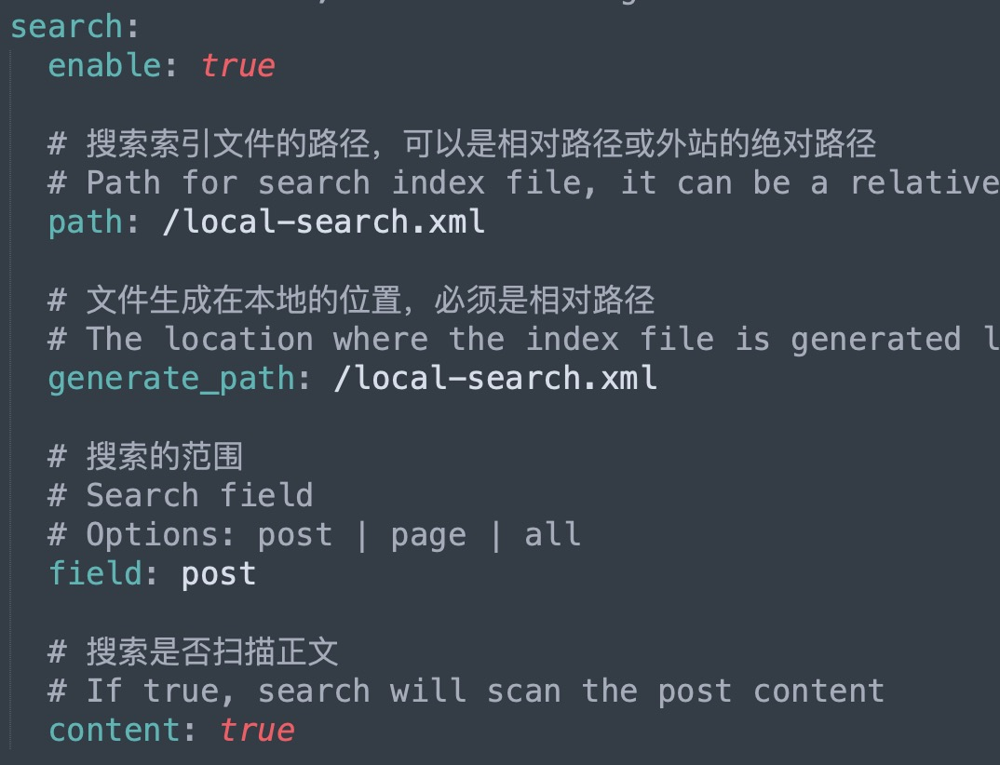
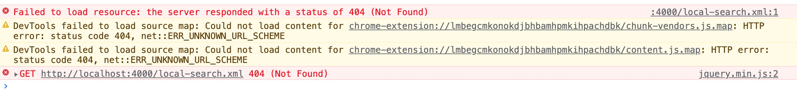
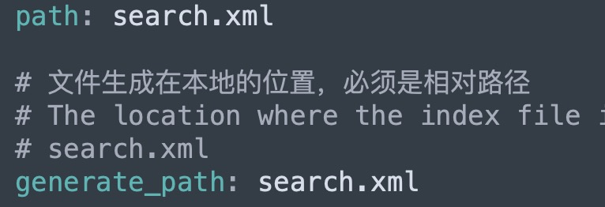
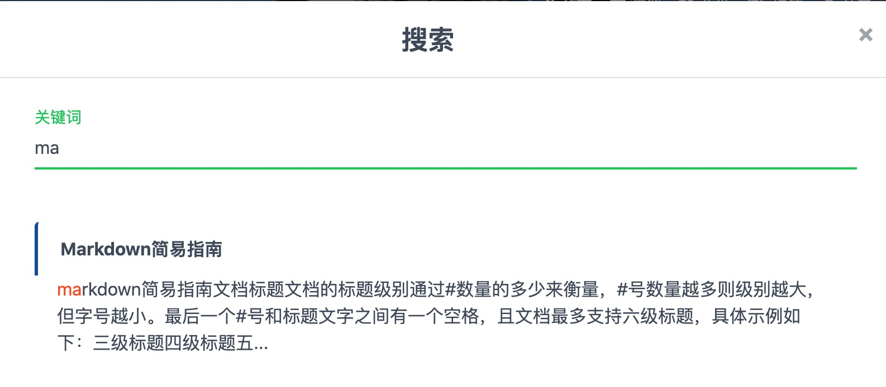
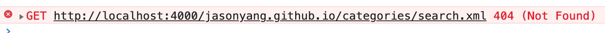
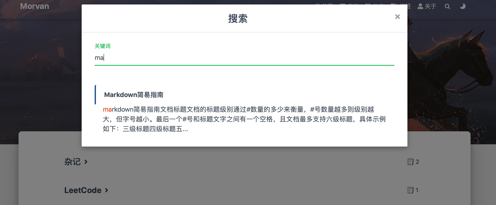

解决Hexo框架下Fluid主题自带搜索框一直loading的问题
解决Hexo框架下Fluid主题自带搜索框一直loading的问题
最开始根据Fluid主题创建个人博客时发现搜索框一直显示loading，不能进行本地搜索。最开始尝试百度和Google解答无果，便搁置了下去。最近有了时间便开始尝试解决，最终使用了一种可行的方案达到了本地搜索效果。
问题描述
fluid主题无法搜索的问题如下：当点击博客页面的搜索按钮时，搜索页面会一直显示Loading，如下图所示：

寻找原因
打开自己的博客根文件夹，如我的就是blog，然后打开themes\fluid\_config.yml，找到search模块，如下所示：

从图中可以看到我们搜索索引的文件是local-search.xml，然命令行切换到blog目录启动hexo三连发。
1 | |
打开Chrome浏览器，通过localhost链接打开博客主页，然后点击搜索按钮，使用F12查看报错信息，可以看到如下报错。

可以发现是因为找不到这个搜索文件引发的报错，因此就有了解决方案version1。
解决方案version1
因为搜索框一直loading的原因是找不到生成的.xml文件，然后尝试在自己的blog文件夹中查找local-search.xml文件，发现确实有随着hexo g命令一起生成的local-search.xml文件，但是文件内部并没有博客的内容，因此即使更换为该文件同样无法起到搜索作用（这个本地搜索功能本质上就是检索.xml文件内部的内容，因此没有博客内容的.xml文件起不到任何检索作用）。
接下来仔细查看blog文件夹，发现在blog\public\文件夹内生成了一个search.xml文件，该文件包含了博客内部的内容应该能起到检索作用。那么，开始修改！同样，打开blog\themes\fluid\_config.yml，找到search模块，更改path如下所示：

再次启动hexo三连大法，然后可以看到主页的搜索已经可以正常检索了，然而当点击到分类d等其他页面时，再点击搜索，同样还是Loading。

再次使用F12查看问题

发现全使用search.xml之后在跳转其他页面时Fluid会自动在地址上加入页面标签，比如分类页面就加上了categories(主页时是http://localhost:4000/jasonyang.github.io/search.xml，而分类页变为了http://localhost:4000/jasonyang.github.io/categories/search.xml)
然后就想到了使用绝对的文件索引地址，由此再每次切换页面时检索文件的地址就不会发生变化。
解决方案version2
因为这个博客是为了部署到GitHub上面，因此这里将blog\themes\fluid\_config.yml，文件search版块的path更改为博客项目的地址+search.xml。例如：
1 | |
最后hexo d部署到GitHub Pages，测试结果如下：

挖个坑，2021年8月13日之后在使用hexo d部署时会遇到Spawn failed错误，网上搜索该错误的解决方法都不对，改天再说如何解决。
Post author: jasonyang
Copyright Notice: All articles in this blog are licensed under CC BY-NC-SA 3.0 unless stating additionally. 转载请注明出处。